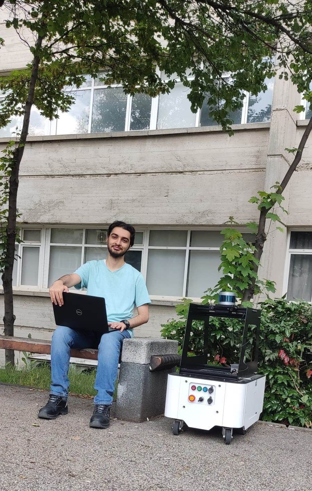
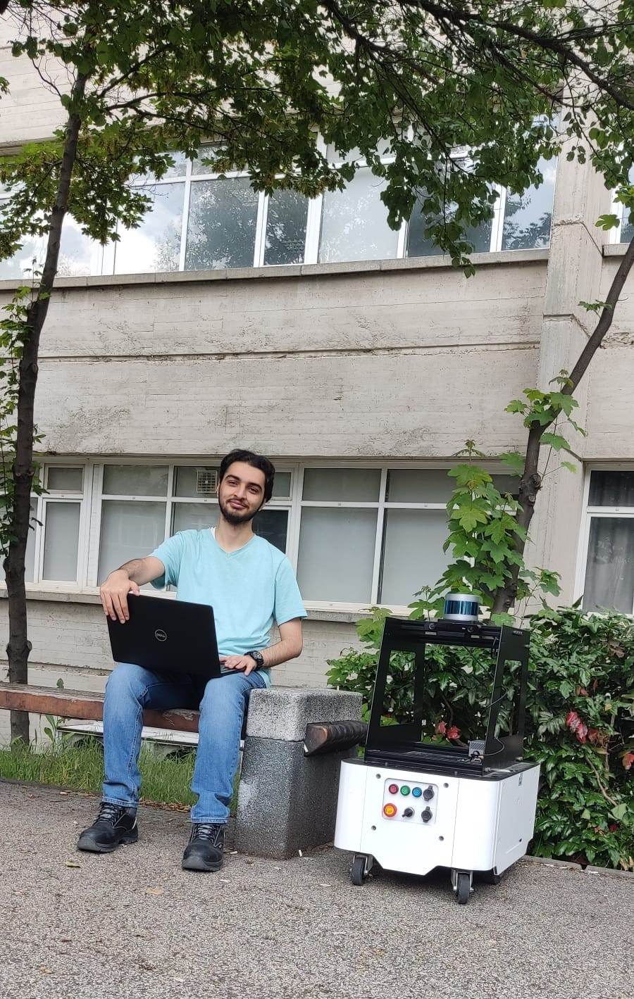

Giriş
Modern dünyada, mobil robotların öne çıkan bir alt alan olduğu çok sayıda görev, farklı robot türleri tarafından otomatikleştirilmektedir. Bu otonom makineler hareket kabiliyetine sahip olup eğlence, ev aletleri, askeri ve tıbbi sektörler gibi çeşitli alanlarda kullanılmaktadır. Bu uygulamalar, mobil robotların karmaşık görevleri yerine getirmesini ve çeşitli ortamlarda gezinmesini gerektirir. Bu alandaki odak noktamız, mevcut mobil robotların donanımını optimize etmek ve navigasyon algoritmalarının verimliliğini artırarak ilgili uygulamalarında daha etkin ve güvenilir bir şekilde çalışabilmelerini sağlamaktır.
Tanıtım
Takımımızı, Projemizin odağını ve proje kapsamında yaptığımız her şeyin özetini yan taraftaki videoda izleyebilirsiniz.
Proje Kapsamında Mobil Robota Yaptığımız İyileştirmeler
Yazılımsal İyileştirmeler
Fiziksel İyileştirmeler
Çoklu Harita Navigasyonu
Model geliştirme aşamasında robotların birden fazla harita arasında sorunsuz bir şekilde geçiş yapmasını sağlayan sağlam bir çözüm geliştirdik. Robot İşletim Sisteminin (ROS), LIDAR teknolojisinin, SLAM Araç Kutusunun ve Hareket Tabanının yeteneklerinden yararlanarak hassas ve etkili navigasyon sağlıyoruz. ROS, robotun çalışması için gerekli olan çeşitli yazılım araçlarını ve donanım bileşenlerini entegre ederek omurga görevi görür. LIDAR, engellerin tespiti ve güvenli navigasyonun sağlanması için hayati önem taşıyan ayrıntılı çevresel verileri toplamak için kullanılıyor. Gelişmiş teknolojilerin bu entegrasyonu, güvenilir ve uyarlanabilir bir robotik navigasyon sisteminin temelini oluşturur. SLAM (Eşzamanlı Yerelleştirme ve Haritalama) Araç Kutusu, haritalar oluşturup sürekli güncellerken aynı zamanda haritaların içindeki robotu yerelleştirerek kurulumumuzda çok önemli bir rol oynuyor. Bu ikili işlevsellik, robotun çevresini doğru bir şekilde anlamasını ve karmaşık ortamlardaki konumunu korumasını sağlar. SLAM Araç Kutusu'nun haritaları dinamik olarak güncelleme yeteneği, robotun ortamdaki değişikliklere uyum sağlayabilmesini sağlar ve böylece verimli ve doğru bir şekilde gezinme yeteneğini artırır. Move Base, yol planlama ve engellerden kaçınma işlemlerini gerçekleştirerek SLAM Araç Kutusunu tamamlar. LIDAR'dan gelen gerçek zamanlı verileri kullanan Move Base, yolları dinamik olarak uyarlayarak robotun karmaşık ve öngörülemeyen ortamlarda bile belirli noktalara otonom olarak ulaşabilmesini sağlar. Move Base, rotaları en son çevresel verilere göre sürekli olarak ayarlayarak robotun otonom olarak gezinme ve öngörülemeyen engellere yanıt verme yeteneğini geliştirir. Bu kapsamlı kurulum yalnızca hassas navigasyonu kolaylaştırmakla kalmaz, aynı zamanda robotun görevleri yüksek derecede özerklik ve güvenilirlikle yerine getirmesine de olanak tanır.


Robot İçi Kablo Düzenlemeleri
Başlangıçta mobil robotların içindeki kablolar hareket halindeyken tekerleklere dolanıyor veya yerde sürükleniyordu. Ekip daha sonra kabloları güvenli bir şekilde yerlerinde kalacak şekilde titizlikle düzenleyerek bu sorunu çözdü ve robotun verimliliğini ve ömrünü önemli ölçüde artırdı.


Kullanıcı Arayüzü
Daha önce, mobil robot için kalan pil ömrünü kontrol etmenin veya Wi-Fi bağlantılarını yönetmenin bir yolu yoktu ve bu da beklenmedik güç kayıplarına ve bağlantı sorunlarına yol açıyordu. Bu sorunu çözmek için ekip, yerinde hızlı kontrol sağlayan küçük bir ekranla donatılmış bir Arduino aracı geliştirdi ve kurdu. Bu araç yalnızca kalan pili izlemekle kalmıyor, aynı zamanda mevcut Wi-Fi ağını da görüntülüyor, erişilebilen mevcut ağları gösteriyor ve kullanıcıların ağlar arasında sorunsuz bir şekilde geçiş yapmasına olanak tanıyor. Bu geliştirme, robotun güvenilirliğini ve operasyonel verimliliğini önemli ölçüde artırır.

Güç Anahtarı Değiştirme
Bazı kablolar, mobil robota motorların ana güç kaynağından bağımsız olarak açılıp kapanmasına olanak tanıyan yeni bir güç anahtarı eklenecek şekilde değiştirildi. Bu değişiklikten önce motorların kapatılıp açılması gerektiğinde robotun tamamının kapatılması gerekiyordu. Artık bu anahtarla sadece motorların gücü kesiliyor ve süreç çok daha verimli hale geliyor. Bu iyileştirme, tekerlekleri kontrol etmek için gerekli olan motorların robotun genel işlevselliğini bozmadan yönetilebilmesi nedeniyle daha sorunsuz çalışma ve bakım sağlar.
Mobile Robot üzerindeki Donanımsal Ekipman
Takılı Donanımlar:
- NVIDIA Jetson AGX Orin Developer Kit
- LIDAR
- Zed 2
- Arduino UNO
- 2.4" Dokunmatik Ekran
Takım Tanıtımı
Galeri


 
